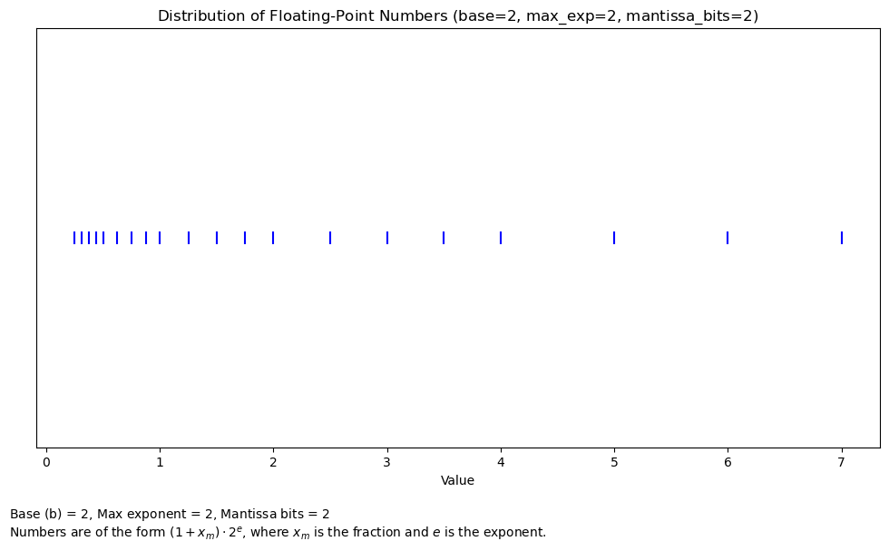
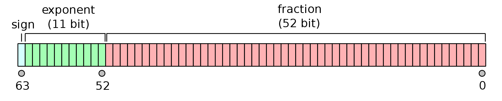
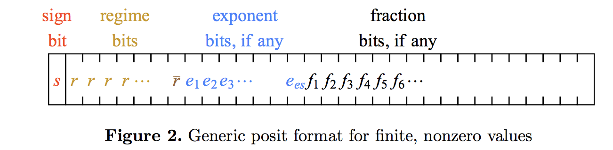
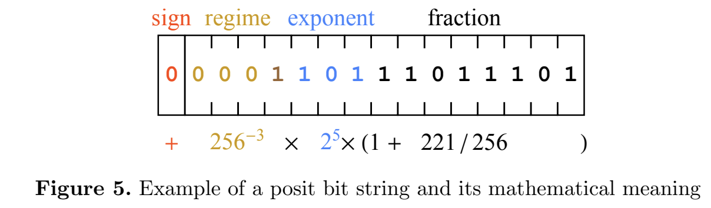
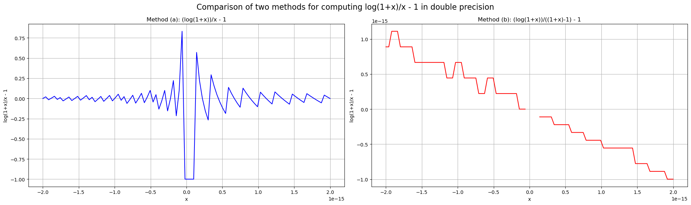
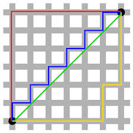
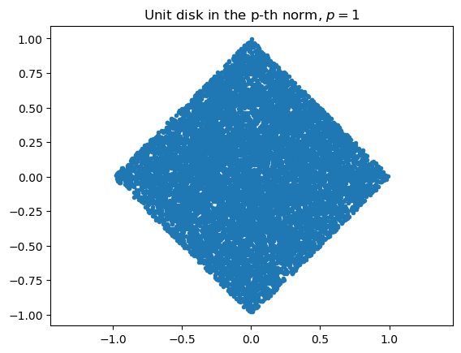

где: - significand (значащая часть) - целое число - base (основание) - положительное целое число
- exponent (показатель степени) - целое число (может быть отрицательным)
Например:
1.2 = 12 \cdot 10^{-1}.
Этот формат имеет долгую историю. Он уже использовался в первом в мире работающем программируемом, полностью автоматическом цифровом компьютере Z3, спроектированном в 1935 году и завершенном в 1941 году в Германии Конрадом Цузе.
где s \in \{0, 1\} - знаковый бит, d_i \in \{0, 1\} - m-битная мантисса, p \in \mathbb{Z}; 0 \leq p \leq 2^e, e - e-битная экспонента, обычно определяемая как 2^e - 1
Можно представить как равномерную m-битную сетку между двумя последовательными степенями числа 2.
Простые примеры
Существует много способов записать число в научной нотации, но всегда есть единственное нормализованное представление с ровно одной ненулевой цифрой слева от десятичной точки.
Пример 1: Каково нормализованное представление числа 00101101.101?
0.0001101001110= 1.110100111 \times 2^{-4}
Умножение более подробно
Рассмотрим два числа с плавающей точкой x, y, у которых экспоненты и дробные части равны x_e, y_e и x_m, y_m соответственно. Результат обычного умножения чисел с плавающей точкой будет:
Недавние статьи: Addition is all you need пытаются доказать, что мы можем заменить это умножение сложением и все равно получить обучаемые нейронные сети (требует проверки).
Фиксированная и плавающая точка
В: Каковы преимущества/недостатки чисел с фиксированной и плавающей точкой?
О: В большинстве случаев они работают нормально.
Числа с фиксированной точкой представляют числа в заданном диапазоне и контролируют абсолютную точность.
Числа с плавающей точкой представляют числа с относительной точностью и подходят для случаев, когда числа в вычислениях имеют разный масштаб (например, 10^{-1} и 10^{5}).
На практике, если скорость не имеет значения, используйте float32 или float64 (на самом деле, нет!)
Числа с плавающей точкой на логарифмической шкале
Визуализируем, как числа с плавающей точкой распределены на вещественной прямой:
import numpy as npimport matplotlib.pyplot as plt# Define parameters for a small floating-point systemb =2# basee_max =3# maximum exponentmantissa_bits =2# number of bits for mantissa# Generate all possible combinations of exponent and mantissaexponents =range(-e_max, e_max +1)mantissas = np.linspace(0, 1-2**(-mantissa_bits), 2**mantissa_bits)# Calculate floating-point numbersfp_numbers = []for e in exponents:for m in mantissas: fp_numbers.append((1+ m) * b**(e))# Sort the numbers for proper visualizationfp_numbers.sort()# Create figurefig, ax = plt.subplots(figsize=(12, 6))# Plot the floating-point numbersax.scatter(fp_numbers, [1] *len(fp_numbers), marker='|', s=100, color='blue')ax.set_ylim(0.5, 1.5)ax.set_yticks([]) # Remove y-axis ticksax.set_title(r'Distribution of Floating-Point Numbers (base=$%d$, max_exp=$%d$, mantissa_bits=$%d$)'% (b, e_max, mantissa_bits))ax.set_xlabel('Value')# Add text explanationplt.figtext(0.1, -0.05, r"Base (b) = $%d$, Max exponent = $%d$, Mantissa bits = $%d$"% (b, e_max, mantissa_bits) +"\n"+r"Numbers are of the form $(1 + x_m) \cdot 2^e$, where $x_m$ is the fraction and $e$ is the exponent.", wrap=True)#plt.tight_layout()#plt.show()
Text(0.1, -0.05, 'Base (b) = $2$, Max exponent = $3$, Mantissa bits = $2$\nNumbers are of the form $(1 + x_m) \\cdot 2^e$, where $x_m$ is the fraction and $e$ is the exponent.')

IEEE 754
В современных компьютерах представление чисел с плавающей точкой контролируется стандартом IEEE 754, который был опубликован в 1985 году, и до этого момента разные компьютеры по-разному работали с числами с плавающей точкой.
IEEE 754 имеет: - Представление чисел с плавающей точкой (как описано выше), (-1)^s \times c \times b^q. - Две бесконечности, +\infty и -\infty - Два нуля: +0 и -0 - Два вида NaN: тихий NaN (qNaN) и сигнальный NaN (sNaN) - qNaN не вызывает исключение на уровне модуля операций с плавающей точкой (FPU), пока вы не проверите результат вычислений - значение sNaN вызывает исключение от FPU при использовании соответствующей переменной. Этот тип NaN может быть полезен для целей инициализации - C++11 предлагает стандартный интерфейс для создания различных NaN - Правила округления - Правила для \frac{0}{0}, \frac{1}{-0}, \ldots
Возможные значения определяются с помощью - основания b - точности p - количество цифр - максимально возможного значения e_{\max}
и имеют следующие ограничения - $ 0 c b^p - 1$ - 1 - e_{\max} \leq q + p - 1 \leq e_{\max}
Поведение при операциях: - qNaN (тихий NaN): - Не вызывает исключения при генерации - Распространяется через все последующие вычисления - Пример: 0/0 → qNaN, qNaN + 5 → qNaN
sNaN (сигнализирующий NaN):
Вызывает исключение при использовании в любой арифметической операции
Используется для отладки критических ошибок
Пример: Попытка чтения неинициализированной памяти
2. Битовая репрезентация: Тип | Знак | Экспонента | Мантисса | |——–|——|——————|——————-| | qNaN | любой| все 1 | 1xxx… (MSB=1) | | sNaN | любой| все 1 | 0xxx… (MSB=0) |
MSB - старший бит мантиссы
3. Практическое использование в ИИ: - qNaN: - Автоматическая обработка ошибок в градиентах - Подавление исключений в распределенных вычислениях - Пример: NaN в лоссе при batch-обучении
sNaN:
Отладка численной нестабильности в кастомных ядрах CUDA
Обнаружение ошибок инициализации параметров
Валидация входных данных в критических системах
4. Особенности реализации: - Большинство GPU (NVIDIA) не поддерживают sNaN - В Python math.nan всегда возвращает qNaN - Некоторые фреймворки (PyTorch) перехватывают NaN до генерации исключений
Пример использования в отладке:
import numpy as np## Создание sNaN (не поддерживается напрямую в NumPy)snan = np.array([np.nan], dtype=np.float32)snan.view(np.uint32)[0] =0x7F800001# Правильный паттерн для sNaNnp.seterr(invalid='raise') # Включаем генерацию исключенийtry: result = snan +2# Вызовет InvalidOperationexceptFloatingPointError:print("Обнаружена критическая численная ошибка!")
Обнаружена критическая численная ошибка!
Одинарная и двойная точность
Два стандартных формата, называемые binary32 и binary64 (также называемые форматами одинарной и двойной точности). В последнее время формат binary16 играет важную роль в обучении глубоких нейронных сетей.
Название
Общее название
Основание
Разряды
Emin
Emax
binary16
половинная точность
2
11
-14
+ 15
binary32
одинарная точность
2
24
-126
+ 127
binary64
двойная точность
2
53
-1022
+1023

Примеры
Для числа +0
sign равен 0
exponent равен 00000000000
fraction состоит из нулей
Для числа -0
sign равен 1
exponent равен 00000000000
fraction состоит из нулей
Для +бесконечности
sign равен 0
exponent равен 11111111111
fraction состоит из нулей
Вопрос: что насчет -бесконечности и NaN?
Точность и память
Относительная точность одинарной точности составляет 10^{-7}-10^{-8}, в то время как для двойной точности - 10^{-14}-10^{-16}.
Важное замечание 1: float16 занимает 2 байта, float32 занимает 4 байта, float64, или двойная точность, занимает 8 байт.
Важное замечание 2: Только эти два типа чисел с плавающей точкой поддерживаются аппаратно (float32 и float64) + на GPU/TPU поддерживаются различные типы с плавающей точкой.
Важное замечание 3: Вам следует использовать двойную точность в вычислительной науке и инженерии, и float32/float16 на GPU/в науке о данных.
Сейчас для больших моделей float16 становится все более надежным.
Как формат представления чисел влияет на обучение нейронных сетей (НС)?
Веса в слоях (полносвязных, сверточных, функциях активации) могут храниться с разной точностью
Важно повышать энергоэффективность устройств, используемых для обучения НС
Проект DeepFloat от Facebook демонстрирует, как переработать операции с плавающей точкой для обеспечения эффективности при обучении НС, подробнее см. в этой статье
Влияние представления вещественных чисел на градиенты функций активации
Обычно первая цифра равна единице
Субнормальные числа имеют первую цифру 0 для представления нулей и чисел, близких к нулю
Субнормальные числа заполняют промежуток между положительными и отрицательными числами
У них есть проблемы с производительностью, часто по умолчанию обнуляются
PyTorch и Tensorflow с поддержкой этого формата доступны в Nvidia NCG
Альтернатива стандарту IEEE 754
Проблемы в IEEE 754: - переполнение в бесконечность или ноль - множество различных NaN - невидимые ошибки округления - точность либо очень высокая, либо очень низкая - subnormal numbers – числа между 0 и минимальным возможным представимым числом, т.е. significand начинается с нуля
Концепция posits может заменить числа с плавающей точкой, см. эту статью

представляют числа с некоторой точностью, но обеспечивают пределы изменения
нет переполнений!
пример представления числа

Демонстрация точности деления
import randomimport numpy as npc = np.float32(0.925924589693)print(c)a = np.float32(1.786875867457e-2)b = np.float32(c / a)print('{0:10.16f}'.format(b))print(abs(a * b - c)/abs(c))
0.9259246
51.8180694580078125
0.0
Квадратный корень
a = np.float32(1e-20)b = np.sqrt(a)print(b.dtype)print('{0:10.64f}'.format(abs(b * b - a)/abs(a)))
a = np.float32(0.0001)b = np.exp(a)print(b.dtype)print((np.log(b) - a)/a)
float32
0.000115978764
Еще примерчики
import numpy as npimport matplotlib.pyplot as plt# Create x points in the range [-2e-15, 2e-15]x = np.linspace(-2e-15, 2e-15, 100)# Compute log(1+x)/x - 1 using method (a) and (b), being careful about x=0y_a = np.zeros_like(x)y_b = np.zeros_like(x)nonzero = x !=0y_a[nonzero] = (np.log(x[nonzero]+1))/x[nonzero] -1# (a)y_b[nonzero] = (np.log(x[nonzero]+1))/((1+x[nonzero])-1) -1# (b# Create the plotsfig, (ax1, ax2) = plt.subplots(1, 2, figsize=(20, 6))# Plot for method (a)ax1.plot(x, y_a, 'b-')ax1.grid(True)ax1.set_xlabel('x')ax1.set_ylabel('log(1+x)/x - 1')ax1.set_title('Method (a): (log(1+x))/x - 1')# Plot for method (b)ax2.plot(x, y_b, 'r-')ax2.grid(True)ax2.set_xlabel('x')ax2.set_ylabel('log(1+x)/x - 1')ax2.set_title('Method (b): (log(1+x))/((1+x)-1) - 1')# Adjust layout and add a main titleplt.tight_layout()fig.suptitle('Comparison of two methods for computing log(1+x)/x - 1 in double precision', fontsize=16)plt.subplots_adjust(top=0.88)plt.show()
/var/folders/x_/_k8z8m6s2qxc_j4gwz6fpvmm0000gp/T/ipykernel_7697/1439480773.py:12: RuntimeWarning: invalid value encountered in divide
y_b[nonzero] = (np.log(x[nonzero]+1))/((1+x[nonzero])-1) - 1 # (b

Итоги демо
Для некоторых значений обратные функции дают точные ответы
Относительная accuracy должна сохраняться благодаря IEEE standard
Не выполняется для многих современных GPU
Больше деталей про адаптацию IEEE 754 standard для GPU можно найти здесь
Worst-case ошибка пропорциональна \mathcal{O}(n), в то время как mean-squared ошибка равна \mathcal{O}(\sqrt{n}).
Kahan algorithm дает границу worst-case ошибки \mathcal{O}(1) (т.е. независимо от n).
Можете ли вы найти алгоритм лучше?
Суммирование Кахана
Следующий алгоритм дает ошибку 2 \varepsilon + \mathcal{O}(n \varepsilon^2), где \varepsilon - это machine precision.
Причина потери значимости при суммировании заключается в операциях с числами разного порядка
Основная идея Kahan summation состоит в том, чтобы отслеживать маленькие ошибки и аккумулировать их в отдельной переменной
Этот подход называется compensated summation
import mathimport numpy as npfrom numba import jit as numba_jitn =10**6sm =1e-10x = np.ones(n, dtype=np.float32) * smx[0] =1.0true_sum =1.0+ (n -1)*smapprox_sum = np.sum(x)math_fsum = math.fsum(x)@numba_jit(nopython=True)def kahan_sum_numba(x): s = np.float32(0.0) c = np.float32(0.0)for i inrange(len(x)): y = x[i] - c t = s + y c = (t - s) - y s = treturn sdef simple_sum(x): s =0.0for i inrange(len(x)): s += x[i]return sk_sum_numba = kahan_sum_numba(x)simple_sum_result = simple_sum(x)print('Error in np sum: {0:3.1e}'.format(approx_sum - true_sum))print('Error in simple sum: {0:3.1e}'.format(simple_sum_result - true_sum))print('Error in Kahan sum Numba: {0:3.1e}'.format(k_sum_numba - true_sum))print('Error in math fsum: {0:3.1e}'.format(math_fsum - true_sum))
Error in np sum: 1.7e-06
Error in simple sum: -1.0e-04
Error in Kahan sum Numba: 1.7e-08
Error in math fsum: 1.3e-12
Итого
Необходимо быть очень осторожным с числами с плавающей точкой, так как они могут давать неверные результаты из-за ошибок округления.
Для многих стандартных алгоритмов стабильность хорошо изучена и проблемы могут быть легко обнаружены.
Векторы
В численной линейной алгебре мы обычно работаем не с числами, а с векторами
Напомним, что вектор в фиксированном базисе размера n может быть представлен как одномерный массив с n числами
Как правило, он рассматривается как матрица размера n \times 1 (вектор-столбец)
Пример: Многочлены степени \leq n образуют линейное пространство. Многочлен $ x^3 - 2x^2 + 1$ может быть представлен как вектор \begin{bmatrix}1 \\ -2 \\ 0 \\ 1\end{bmatrix} в базисе \{x^3, x^2, x, 1\}
Норма вектора
Векторы обычно предоставляют (приближенное) описание физического (или какого-либо другого) объекта
Один из главных вопросов - насколько точным является приближение (1%, 10%)
Приемлемое представление, конечно, зависит от конкретного применения. Например:
В дифференциальных уравнениях в частных производных точности 10^{-5} - 10^{-10} являются типичным случаем
В приложениях, основанных на данных, иногда ошибка в 80\% допустима, так как полезный сигнал искажен сильным шумом
Расстояния и нормы
Норма - это количественная мера малости вектора, которая обычно обозначается как \Vert x \Vert.
Норма должна удовлетворять определенным свойствам:
\Vert \alpha x \Vert = |\alpha| \Vert x \Vert
\Vert x + y \Vert \leq \Vert x \Vert + \Vert y \Vert (неравенство треугольника)
Если \Vert x \Vert = 0, то x = 0
Расстояние между двумя векторами определяется как
d(x, y) = \Vert x - y \Vert.
Стандартные нормы Наиболее известной и широко используемой нормой является евклидова норма:
\Vert x \Vert_2 = \sqrt{\sum_{i=1}^n |x_i|^2},
которая соответствует расстоянию в нашей реальной жизни. Если векторы имеют комплексные элементы, мы используем их модуль.
p-норма
Евклидова норма, или 2-норма, является подклассом важного класса p-норм:
\Vert x \Vert_p = \Big(\sum_{i=1}^n |x_i|^p\Big)^{1/p}.
Существуют два очень важных частных случая: - Норма Чебышева, определяется как элемент с максимальным абсолютным значением:
\Vert x \Vert_{\infty} = \max_i | x_i|
L_1 норма (или манхэттенское расстояние), которая определяется как сумма модулей элементов x:
\Vert x \Vert_1 = \sum_i |x_i|

Эквивалентность норм
Все нормы эквивалентны в том смысле, что
C_1 \Vert x \Vert_* \leq \Vert x \Vert_{**} \leq C_2 \Vert x \Vert_*
для некоторых положительных констант C_1(n), C_2(n), x \in \mathbb{R}^n для любой пары норм \Vert \cdot \Vert_* и \Vert \cdot \Vert_{**}. Эквивалентность норм по существу означает, что если вектор мал в одной норме, то он мал и в другой норме. Однако константы могут быть большими.
Вычисление норм в Python
Пакет NumPy содержит все необходимое для вычисления норм: функция np.linalg.norm
import numpy as npn =100a = np.random.randn(n)b = a +1e-1* np.random.normal((n,))print('Relative error in L1 norm:', np.linalg.norm(a - b, 1) / np.linalg.norm(b, 1))print('Relative error in L2 norm:', np.linalg.norm(a - b) / np.linalg.norm(b))print('Relative error in Chebyshev norm:', np.linalg.norm(a - b, np.inf) / np.linalg.norm(b, np.inf))
Relative error in L1 norm: 1.007463406918509
Relative error in L2 norm: 1.0030695138070433
Relative error in Chebyshev norm: 0.7942525068309023
Единичные шары в различных нормах
Единичный шар - это множество точек, таких что \Vert x \Vert \leq 1
Для евклидовой нормы единичный шар является обычным кругом
Для других норм единичные шары выглядят совершенно по-разному
import matplotlib.pyplot as pltp =1# Which norm do we useM =40000# Number of sampling pointsb = []for i inrange(M): a = np.random.randn(2, 1)if np.linalg.norm(a[:, 0], p) <=1: b.append(a[:, 0])b = np.array(b)plt.plot(b[:, 0], b[:, 1], '.')plt.axis('equal')plt.title('Unit disk in the p-th norm, $p={0:}$'.format(p))
Text(0.5, 1.0, 'Unit disk in the p-th norm, $p=1$')

Что такое устойчивый алгоритм?
И мы завершаем лекцию понятием устойчивости.
Пусть x - объект (например, вектор)
Пусть f(x) - функция (функционал), которую вы хотите вычислить
У вас также есть численный алгоритмalg(x), который фактически вычисляет приближение к f(x).
Алгоритм называется устойчивым, если
\Vert \text{alg}(x) - f(x) \Vert \leq \varepsilon
Алгоритм называется обратно устойчивым, если для любого x существует близкий вектор x + \delta x такой, что
\text{alg}(x) = f(x + \delta x)
и \Vert \delta x \Vert мало.
Классический пример
Классическим примером является решение систем линейных уравнений с помощью метода Гаусса, который похож на LU-разложение (подробнее позже)
u =30eps =1e-6print("Исходная функция:", np.log(1- np.tanh(u)**2))eps_add = np.log(1- np.tanh(u)**2+ eps)print("Попытка улучшить стабильность добавлением малой константы:", eps_add)print("Использование более численно стабильной формы:", np.log(4) -2* np.log(np.exp(-u) + np.exp(u)))
Исходная функция: -inf
Попытка улучшить стабильность добавлением малой константы: -13.815510557964274
Использование более численно стабильной формы: -58.61370563888011
/var/folders/x_/_k8z8m6s2qxc_j4gwz6fpvmm0000gp/T/ipykernel_7697/1002619719.py:3: RuntimeWarning: divide by zero encountered in log
print("Исходная функция:", np.log(1 - np.tanh(u)**2))